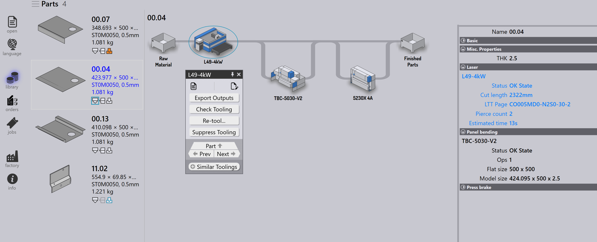

Pièces
La bibliothèque de pièces dans TruSmartCAM sert d’espace de travail centralisé où toutes les pièces importées sont affichées sous forme de vignettes interactives. Elle permet aux utilisateurs de visualiser rapidement les détails des pièces, de vérifier le statut d’outillage sur les différentes machines et d’effectuer des actions telles que la recherche, la navigation ou l’ouverture d’informations spécifiques à une pièce.
Pour plus d’informations sur l’importation de pièces, voir Import parts.
-
Utilisez le raccourci P pour accéder à la library.

-
La vue de la bibliothèque affiche toutes les pièces importées sous forme de vignettes.
-
Chaque vignette affiche :
-
L’image de la pièce.
-
Les propriétés de base de la pièce — nom, taille, matière, épaisseur, etc.
-
Le statut d’outillage pour les machines d’usine disponibles.
-
-
La vue s’actualise automatiquement avec des données en direct. Vous pouvez forcer une actualisation à tout moment en appuyant sur F5.
-
Les pièces peuvent être recherchées par nom de pièce ou par matière à l’aide de la zone de recherche :
-
Cliquez dans la zone de recherche ou appuyez sur Ctrl+F.
-
Saisissez le texte à rechercher, TruSmartCAM met à jour la liste en direct.
-
Appuyez sur Esc pour réinitialiser le texte de recherche.
-
Page de détail de la pièce
-
Double-cliquer sur une vignette ou appuyer sur Enter après avoir sélectionné une vignette bascule la vue vers les détails.
-
Cliquez sur n’importe quelle pièce pour afficher son parcours machine. La sélection d’une machine dans le parcours ouvre le panneau de la machine, où vous pouvez examiner et modifier l’outillage.
-
De plus, la page de détails à droite affiche les paramètres d’outillage et les informations sur les machines utilisées.
